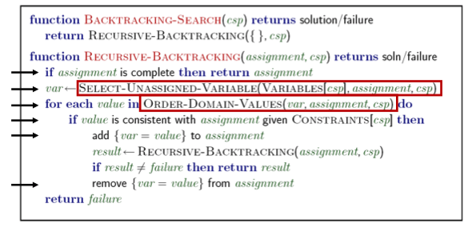
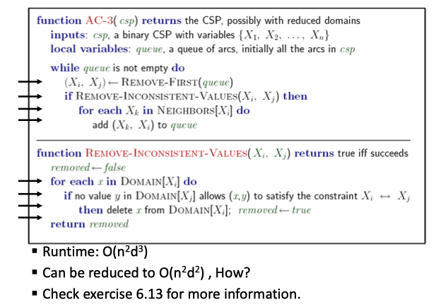
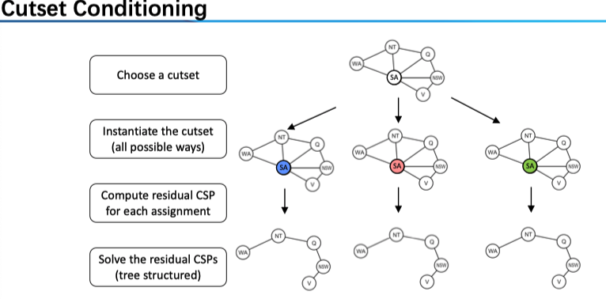

在搜索算法中，我们关心的是从初始节点到目标节点的一条路径；而在约束满足问题中，我们没有初始状态，只关心 goal 而不在乎 path。
- Planning: sequences of actions
- Identification: assignments to variables
Constraint Satisfaction Problems (CSPs) are specialized for identification problems
我们可以把 CSP 看成是特殊的搜索问题。对于一般的搜索问题来说，State is atomic or indivisible, known as a “black box” without internal structure，而在 CSP 中 State is represented as a feature vector；在搜索问题中 Goal test can be any function over states，而CSP 中 Goal test is a set of constraints to identify the allowable feature vector。
我们来仔细看看 Feature Vector，它是由 A set of k variables (or features) 组成的，对于每个 feature 有值域 domain；而我们的目标就是找到满足约束的一组赋值。方便起见我们定义 complete state 和 partial state，后者即对部分变量赋值满足约束，其余部分待赋值。典型的问题有 Map Coloring 和 N-Queens 等。
Constraint Graphs
对于一个 CSP 问题，我们可以采用约束图的方式进行表示：对于一个二元约束来说可将两个 feature 连起来；所以，问题在于将 N-nary 转化为 Binary constraints。我们假定 domain 都是有限的。
第一步，引入新的变量（约束）Z，例如对于加法的三元约束来说，我们引入变量，满足
Domain is the set of all possible 3-tuples satisfying \(A+B=C\). \(\{(a_1 , b_1 , c _1 ), (a_ 2 , b _2 , c_ 2 ), …\}， s.t. a_ 1 + b_ 1 = c_ 1 …\)
第二步，建立新变量 Z 与 A、B、C 之间的约束，显然可以是 A 与 Z 的 domain 中三元组的第一个元素相同。
Create new constraints between Z and three original variables respectively (the position in the tuple is linked to an original variable).
\[
(Z,A)\in \{((a_1,b_1,c_1)a_1),...\}\tag{1}\\
(Z,B)\in \{((a_1,b_1,c_1)b_1),...\}
\]
这样，我们通过引入一个新的变量，和三个二元约束，就把该三元约束转换好了；对于更多的约束，可以用相似的方法进行。
Note：这里可能一时没法理解，我们要理解究竟什么是约束。先来看普通的二元约束，以地图问题为例，假设每个国家的颜色均可为红黄蓝，约束的意义在于，若 A 填了红色，那么相邻的 B 就只能涂黄或蓝——也就是说，一个变量的值确定后，另一个变量的值域也变化了——反过来想我们如何表示约束？可以采用集合的形式 \(\{(R,Y),(R,B)...\}\) 。我们重新来理解约束，就是 A 和 B 分别取值，构成一个二元组，要求这个二元组在约束集合中。（我在理解上的困惑实际上在于，没有搞清楚约束的形式化表达。）这样的话，我们来看加法约束，假设 A 已定，对于 A 和 Z 的约束来说，式（1）要求两者构成的二元组要在约束集合中，这样就缩减了 Z 的值域；若进一步定下了 B 的值，Z 的值域将进一步缩小，事实上这时仅可能剩下一个三元组 \((a,b,c=a+b)\) ，接下来可对 C 进行赋值或者检测约束是否满足。
Solving CSPs
我们可采用 Standard search formulation of CSPs，我们的初始状态为一个 empty assignment，后继函数为对任一未赋值变量进行赋值，而目标检测则要求赋值为 complete state 且符合约束。显然，1. 我们只检查了叶节点而事实上在过程中就可以进行约束检查；2. 如前所述，我们并不关心赋值的顺序，只关心 goal。注意到无论是 BFS 还是 DFS 都是低效的，但是我们没必要存储中间节点，因此，要在 DFS 框架下进行改进。
Backtracking Search 算法针对了这两个问题进行了改进
- Idea 1: One variable at a time in fixed ordering
- Idea 2: Check constraints as you go
简言之：Backtracking = DFS + variable-ordering + fail-on-violation
两个思路都是比较直观的不多介绍。
!

现在的问题在于，如何 Improving Backtracking。
Ordering
显见，不同的赋值顺序会对效率产生影响，又可分为两类：Which variable should be assigned next? In what order should its values be tried?
对于变量的顺序来说，直观来讲，为了尽早避免可能的冲突，我们会选取那些约束比较多的变量（或者说，是 domain 比较小的，回忆一下约束的意义即在于，某一变量定值之后会缩减另外的变量的 domain）。例如，在地图着色问题中，我们一般会从已着色的国家的相邻国开始进行着色。定义：
Variable Ordering: Minimum remaining values (MRV)
Choose the variable with the fewest legal left values in its domain. Also called “most constrained variable”
“Fail-fast” ordering
对于赋值的顺序来说，我们要尽早找到一组解（而不是回溯），那么我们肯定希望给剩余的变量更多的「可能性」，也就是说要避免其他变量的取值发生缩减；我们定义
Value Ordering: Least Constraining Value (LSV)
Given a choice of variable, choose the least constraining value. I.e., the one that rules out the fewest values in the remaining variables
Note that it may take some computation to determine this! (E.g., rerunning filtering)
注意，前者可以让我们避免一些可能的错误（可以「剪枝」）；而或者只是提高了找到解的可能性（但并非保障，只能说「更快找到」）。若我们想找到全部的解，那么前者可以帮助减少计算，但后者则并不会有什么助益。
Filtering: Can we detect inevitable failure early?
MRV 可以让我们避免一些简单的错误（如相邻两国填同样的颜色），然而这里我们仅仅检测了这样一个简单的约束；那么我们能否采取更多的计算来提前发现错误呢？这就是 Filtering 的思路。
先来看 Forward Checking：Cross off values that violate a constraint when added to the existing assignment。我们在取定一个值（搜索）之后，对于相邻边的 domain 进行缩减（推理）。当然，这里我们只「向前看」了一步，事实上对于缩减了 domain 的变量我们可以继续进行推理，也就是约束传播 Constraint Propagation 。我们来给出定义：
Consistency of A Single Arc
An arc \(X \rightarrow Y\) is consistent iff for every \(x\) in the tail there is some \(y\) in the head which could be assigned without violating a constraint
Forward checking: Enforcing consistency of arcs pointing to each new assignment
注意定义，对于一条弧 \(X \rightarrow Y\) 来说，我们减小了 Y 的值域之后，要进行缩减的是 X 的值域；如何缩减，就是要使得 X 的任一个取值，Y 中都至少有一个能满足约束——对于那么不满足的 X 的取值，我们进行缩减。注意其方向，按照这个定义，我们在做 Forward checking 的时候，给定了 A，那么就要对于所以包含指向 A 的弧（事实上都是无向边）的变量进行值域缩减。下面给出具体的算法：!

更宏观的解释：在 Filtering 中，我们 交替进行搜索和推理，在为某一变量赋值之后做弧相容检查。具体来说，当 \(X_i\) 赋值后，我们调用 \(AC-3\)，从 \((X_j,X_i)\) 中未赋值变量\(X_j\)开始，进行约束传播；事实上我们维护了一个队列，一旦某一个变量的值域发生了变化，就将其 neighbors 加入其中。
然而，弧相容仍不能保证不进行回溯。例如，对于一个三角形来说，若每个节点只能赋值为红蓝两色那么显然是无解的，但用弧相容找不错错误来。若想直接得到解，引入 k-相容 K-Consistency 的概念：
- 1-Consistency (Node Consistency): Each single node’s domain has a value which meets that node’s unary constraints
- 2-Consistency (Arc Consistency): For each pair of nodes, any consistent assignment to one can be extended to the other
- K-Consistency: For each k nodes, any consistent assignment to k-1 can be extended to the k th node.
并给出强 k-相容 Strong k-consistency: also k-1, k-2, … 1 consistent，以及结论，对于一个 n 变量的 CSP 来说，strong n-consistency means we can solve without backtracking。这是显然的。
Structure: Can we exploit the problem structure?
这里问题的结果指的是约束图的结构。考虑极端情况：所有节点结构独立的，那么我们可以任意赋值；更为一般的，Independent sub-problems are identifiable as connected components of constraint graph。事实上，这样可分割的情况是很少见的（如澳大利亚地图着色），一个理想的可分问题能大大降低复杂度。注意到，我们可以用 Search 问题的通用复杂度来衡量 CSP，搜索树的深度显然是节点数，宽度为 domain 的大小；若一个 n 个节点的问题可分割成大小为 c 的若干子问题，则时间复杂度从 \(O(d^n)\) 降为 \(O({n \over c} d^c)\) ，变成了 n 的线性函数。
可分割为 sub-problems 的问题也是很少见的，一个更一般的情况是 Tree-Structured CSPs，对此我们有定理：
Theorem: if the constraint graph has no loops, the CSP can be solved in \(O(n d^2 )\) time
同样变为了 n 的线性函数。如何做到呢？1. 对约束树进行拓扑排序；2. 逆着拓扑排序，从孩子到父节点做弧相容检查（即对于\((Parent(X_j),X_j)\)进行检查）；3. 然后顺着拓扑排序，从根节点到到叶节点进行赋值。注意到，进行这样一次弧相容检查之后，我们保障了对于父节点的任意取值，子节点都至少有一个值满足约束，也就保障了算法的正确性（解的存在性）。
树结构也太少见了，一个拓展是 Nearly Tree-Structured CSPs 。对其的思路是，选定一组变量，使得删去这些之后的节点构成一棵树，这样的话，我们只要遍历这组节点的所有可能赋值情况即可。
Conditioning: instantiate a variable, prune its neighbors' domains
Cycle Cutset conditioning: instantiate (in all ways) a set of variables such that the remaining constraint graph is a tree.
所以我们的任务是找到这样的 Cycle Cutset，若其大小为 c，则找到这个集合之后，搜索的时间复杂度为 \(O( (d^c ) (n-c) d^2)\)

Iterative Improvement
在上述 Backtracking 算法中，我们仍一个一个对变量进行赋值，但 CSP 只关心结果，因此一个自然的想法是直接从 complete state 出发，寻找解。Iterative Improvement 是一种 Local Search 方法。我们
- Take an assignment with unsatisfied constraints
- 然后 Operators reassign variable values。
具体来说，我们 1. Variable selection: randomly select any conflicted variable；2. Value selection: min-conflicts heuristic: Choose a value that violates the fewest constraints。这里第二步的变量选择使得冲突最少的那一个，可以认为是一种 heuristic \(h(n)=\) #total number of violated constraints。
这里体现的是 Local Search versus Systematic Search，相较于 BFS, DFS, IDS, Best-First, A* 等系统搜索算法（Keeps some history of visited nodes）来说，后者的一大特点就是不保留 history，然而，这在减少了存储负担的情况带来的问题则是失去了 complet 性质，容易陷入局部最优。
一些 Local Search 包括
- Hill climbing：在 neighbor 中找最优值，迭代，可能陷入局部最优
- Simulated annealing：结合了 random walk 和 hill climbing。在循环过程汇总，与 hill climbing 的不同在于，对于 next state 来说，若是较为「好的」则以概率 1 接受；若相较于前一个状态变差了不是直接拒绝而是以一定的概率 \(P(T)\) 接受（random walk）。接受的概率随着时间降低，也就是「模拟退火」的命名原因。具体的，接受概率为 T 的函数，如 \(\exp(\Delta E/T)\) 其中 \(\Delta E\) 可表为 next value - current value，而\(T\) 随着时间而降低，即从 random walk 逐渐变为 hill climbing。
- Local beam search：并行 k 个 hill climbing——对于 Systematic search 来说保留所有的历史，而前两种仅保留一个，都太极端了，Local beam search 每次保留 k 个 complete state 而它们的 successor 中找最好的（加入了 randomness）的 k 个后代进行下一次模拟。
- Genetic algorithm
另，对于连续函数来说，则要采用梯度下降方法 Gradient decent。
进一步阅读：《人工智能》chapter 4.1 – 4.2。